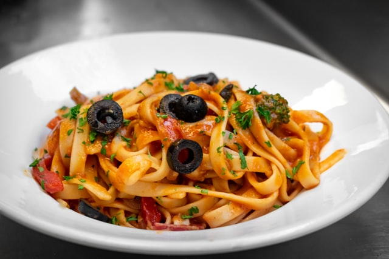

Veggie Puttanesca

Description
Make a veggie version of the classic puttanesca!
Ingredients
Serves two
- 150g spaghetti or tagliatelle
- Clove of garlic (chopped)
- One onion (chopped)
- Black olives (chopped)
- Capers
- Tin of chopped tomatoes
- Stock cube
- Veggie parmesan (grated)
- Tablespoon of olive oil
Steps
- Put the pasta in a pan of salted boiling water and follow the packet instructions.
- Heat olive oil in a pan, then gently heat onion for ten minutes. Then add the chopped garlic.
- Add chopped tomatoes, olives, capers and stock cube. Heat on medium, stirring regularly.
- Drain pasta and serve topped with sauce and veggie parmesan.
Home